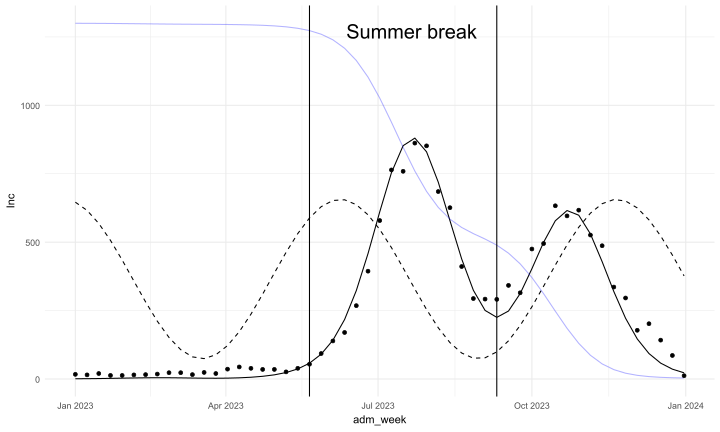
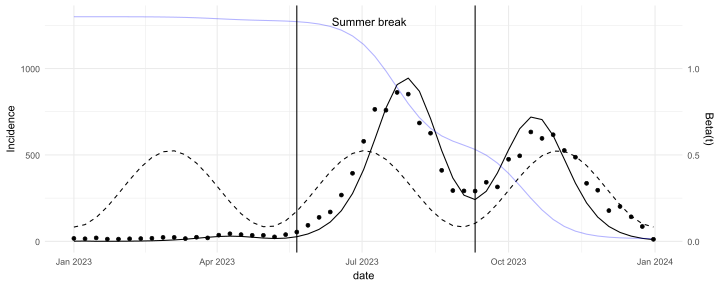

Code
library(tidyverse)
library(reshape2)
library(readxl)
library(lubridate)
library(deSolve)
library(bbmle)
library(stringi)
invisible(Sys.setlocale("LC_TIME", "English"))library(tidyverse)
library(reshape2)
library(readxl)
library(lubridate)
library(deSolve)
library(bbmle)
library(stringi)
invisible(Sys.setlocale("LC_TIME", "English"))df1 <- read_excel("D:/OUCRU/hfmd/data/TCM_full.xlsx",
col_types = c("date", "numeric", "text",
"text", "text", "date", "date", "date",
"text", "text", "text"))
colnames(df1) <- c("dob", "age", "gender", "commune", "district",
"reported_date", "onset_date","adm_date",
"medi_cen","inout","severity")
df1$dob <- df1$dob %>% as_date()
df1$adm_date <- df1$adm_date %>% as_date()
df1$age1 <- interval(df1$dob, df1$adm_date) / years(1)
df1$adm_week <- as.Date(floor_date(df1$adm_date, "week"))
df1$district <- df1$district %>% str_replace_all(
c( "Quận Gò vấp" = "Quận Gò Vấp"))
df1$district <- df1$district %>%
str_remove("Quận|Huyện|Thành phố") %>%
trimws(which = "both")
case <- df1 %>% filter(year(adm_date) == 2023 ) %>%
group_by(adm_week) %>%
count()
case$t <- 1:nrow(case)ch1_adm <- df1 %>%
filter(year(adm_date) == 2023 &
medi_cen %in% c("Bệnh viện Nhi đồng 1",
"Bênh viện Nhi Đồng 1",
"Bệnh viện Nhi Đồng 1")) %>%
mutate(district2 = district %>%
str_replace_all(
c("Quận 2" = "Thủ Đức",
"Quận 9" = "Thủ Đức")) %>%
str_remove("Quận|Huyện") %>%
trimws(which = "both") %>%
stri_trans_general("latin-ascii") %>%
tolower())
ch1_adm_time_series <- ch1_adm %>%
group_by(adm_week) %>%
count() %>%
ungroup()\[\begin{align} \frac{dS}{dt} &= \mu N - \beta_t \frac{SI}{N} - \mu S, \\ \frac{dE}{dt} &= \beta_t \frac{S I}{N} - \sigma E - \mu E, \\ \frac{dI}{dt} &= \sigma E - \gamma I - \mu I, \\ \frac{dR}{dt} &= \gamma I - \mu R. \end{align}\]
Where
\[ \beta_t = \beta_0 \left(1 - \beta_1 \cos(\omega t)\right) \]
Assumed:
S0 = 13000, E0 = 1, I0 = 1, R0 = 0
\(\gamma\) = 0.0192308, \(\mu = \frac{1}{80 \times 52}\)
I found best fitting \(\beta_0, \beta_t, \omega\) by minimizing the negative log likelihood, where the log of the observed incidence is assumed to follow a normal distribution that has a mean of log of the model prediction, scaled by \(\rho\), and a standard deviation that equals the residual standard deviation:
\[ log \ observed\ incidence\ at\ time\ t \sim Normal(log(\rho \times i(t)),\sigma) \]
Here \(\rho\) and \(\sigma\) are estimated by performing an intercept only linear regression of the logged observed incidence against the logged prediction as an offset term, where the estimated intercept corresponds to \(log(\rho)\) and the standard deviation of the linear regression corresponds to \(\sigma\)
library(odin2)
library(dust2)
library(bbmle)
seir_seasonality <- odin2::odin({
N <- S + E + I + R
deriv(S) <- mu * N - beta_t * S * I / N - mu * S
deriv(E) <- beta_t * S * I / N - sigma * E - mu * E
deriv(I) <- sigma * E - gamma * I - mu * I
deriv(R) <- gamma * I - mu * R
deriv(CInc) <- sigma * E
# seasonality forcing
beta_0 <- parameter(0.4)
beta_1 <- parameter(0)
omega <- parameter(2*3.14/52) # use week as time unit by default
sigma <- parameter(0.2)
beta_t <- beta_0*(1 + beta_1*cos(omega*time))
# initialize starting population
init_S <- parameter(9500)
init_I <- parameter(500)
init_E <- parameter(500)
gamma <- parameter(0.05)
mu <- parameter(0.05)
initial(S) <- init_S
initial(E) <- init_E
initial(I) <- init_I
initial(R) <- 0
initial(CInc) <- 0
})
run_mod <- function(mod, pars, duration=100, timestep=1){
# --- initialize simulation time ----
times <- seq(0, duration, timestep)
sys <- dust_system_create(mod, pars)
dust_system_set_state_initial(sys)
out <- dust_system_simulate(sys, times)
out <- dust_unpack_state(sys, out)
out <- out %>%
as.data.frame() %>%
mutate(
t = times
)
out$Inc <- c(1, diff(out$CInc))
out
}
mll_seir <- function(beta_0, beta_1,omega,sigma) {
# Make sure that parameters are positive
beta_0 <- exp(beta_0)
beta_1 <- exp(beta_1)
omega <- exp(omega)
sigma <- exp(sigma)
pars <- list(
beta_1 = beta_1,
beta_0 = beta_0,
omega = omega,
sigma = sigma,
gamma = 1/52,
mu = 1/(80*52),
init_S = 13000,
init_E = 1,
init_I = 1
)
pred <- run_mod(seir_seasonality, pars, duration=53, timestep=1)
# Return the negative log-likelihood
pred <- pred %>% filter(t != 0) %>% pull(Inc)
llh <- lm(log(ch1_adm_time_series$n) ~ 1 + offset(log(pred)))
p <- coef(llh) %>% as.numeric()
sigma2 <- summary(llh)$sigma
# Return the negative log-likelihood
- sum(dnorm(x = log(ch1_adm_time_series$n), mean = log(pred) + log(p), sd = sigma2))
}
starting_param_val <- list(beta_1 = .5,
beta_0 = 0.3,
# gamma = 1/52,
# mu = 1/(80*52),
sigma = .3,
omega = 2*3.14/(52/2.2))
estimates <- mle2(minuslogl = mll_seir, start = lapply(starting_param_val, log), method = "Nelder-Mead")
params <- exp(coef(estimates))
run_mod(seir_seasonality,
pars = list(
beta_0 = params[1],
beta_1 = params[2],
sigma = params[4],
gamma = 1/52,
mu = 1/(80*52),
omega = params[3],
init_S = 13000,
init_E = 1,
init_I = 1
),
duration=53, timestep=1)%>%
filter(t != 0) %>%
cbind(ch1_adm_time_series) %>%
mutate(beta_t = params[1]*(1 + params[2]*cos(params[3]*t)),
N = S+E+I+R,
foi = beta_t*(I/N)) %>%
ggplot(aes(x = adm_week))+
geom_line(aes(y = Inc))+
geom_line(aes(y=beta_t*1000),linetype = "dashed")+
geom_line(aes(y=S/10),color = "blue",alpha = .3)+
geom_point(aes(x = adm_week,y=n),
data = ch1_adm_time_series)+
geom_vline(xintercept = as.Date("2023-05-21"))+
geom_vline(xintercept = as.Date("2023-09-10"))+
annotate(
geom = "text", x = as.Date("2023-06-12"), y = 1300,
label = "Summer break", hjust = 0, vjust = 1, size = 7
)+
theme_minimal()
case2 <- df1 %>%
group_by(adm_week) %>%
count()
case2 %>% ggplot(aes(x = adm_week,y = n )) +
geom_line()+
geom_vline(xintercept = as.Date("2014-05-31"),
alpha = 0.4)+
geom_vline(xintercept = as.Date("2014-08-01"),
alpha = 0.4)+
geom_vline(xintercept = as.Date("2015-05-31"),
alpha = 0.4)+
geom_vline(xintercept = as.Date("2015-08-01"),
alpha = 0.4)+
geom_vline(xintercept = as.Date("2016-05-27"),
alpha = 0.4)+
geom_vline(xintercept = as.Date("2016-08-15"),
alpha = 0.4)+
geom_vline(xintercept = as.Date("2017-05-31"),
alpha = 0.4)+
geom_vline(xintercept = as.Date("2017-08-14"),
alpha = 0.4)+
geom_vline(xintercept = as.Date("2018-05-31"),
alpha = 0.4)+
geom_vline(xintercept = as.Date("2018-08-20"),
alpha = 0.4)+
geom_vline(xintercept = as.Date("2019-05-25"),
alpha = 0.4)+
geom_vline(xintercept = as.Date("2019-09-05"),
alpha = 0.4)+
geom_vline(xintercept = as.Date("2020-07-31"),
alpha = 0.4)+
geom_vline(xintercept = as.Date("2020-09-01"),
alpha = 0.4)+
geom_vline(xintercept = as.Date("2021-05-31"),
alpha = 0.4)+
geom_vline(xintercept = as.Date("2021-09-05"),
alpha = 0.4)+
geom_vline(xintercept = as.Date("2022-06-30"),
alpha = 0.4)+
geom_vline(xintercept = as.Date("2022-09-05"),
alpha = 0.4)+
geom_vline(xintercept = as.Date("2023-05-26"),
alpha = 0.4)+
geom_vline(xintercept = as.Date("2023-08-21"),
alpha = 0.4)+
scale_x_date(breaks = "1 year",date_labels = "%Y")+
labs(x = "Admission week",y = "Number of cases")+
theme_minimal()